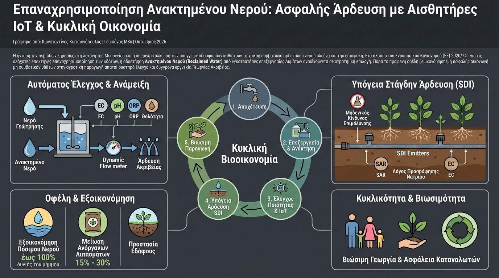

Η ένταση των περιόδων ξηρασίας στη λεκάνη της Μεσογείου και η υπερεκμετάλλευση των υπόγειων υδροφορέων καθιστούν τη χρήση συμβατικού αρδευτικού νερού ολοένα και πιο επισφαλή. Στο πλαίσιο του Ευρωπαϊκού Κανονισμού (ΕΕ) 2020/741 για τις ελάχιστες απαιτήσεις επαναχρησιμοποίησης των υδάτων, η αξιοποίηση Ανακτημένου Νερού (Reclaimed Water) από εγκαταστάσεις επεξεργασίας λυμάτων αναδεικνύεται σε στρατηγική επιλογή. Παρά τα προφανή οφέλη εξοικονόμησης, η ασφαλής εισαγωγή μη συμβατικών υδάτων στην αγροτική παραγωγή απαιτεί αυστηρό έλεγχο και σύγχρονα εργαλεία Γεωργίας Ακριβείας.
Το ανακτημένο νερό περιέχει συχνά αξιόλογες ποσότητες θρεπτικών συστατικών, όπως διαλυτό άζωτο και φώσφορο, λειτουργώντας ως φυσικό μέσο υδρολίπανσης (fertigation). Ταυτόχρονα όμως, ενέχει κινδύνους όπως η συσσώρευση αλάτων (κυρίως νατρίου και χλωρίου), η μεταβολή του pH του εδάφους και η παρουσία ιχνοστοιχείων ή παθογόνων μικροοργανισμών (όπως Escherichia coli). Η αποφυγή αυτών των κινδύνων επιτυγχάνεται μέσω αυτοματοποιημένων σταθμών ελέγχου ποιότητας νερού στην κεφαλή άρδευσης.

Η ψηφιακή παρακολούθηση βασίζεται σε συστοιχίες αισθητήρων IoT που μετρούν συνεχώς την Ηλεκτρική Αγωγιμότητα (EC), το pH, το δυναμικό οξειδοαναγωγής (ORP) και τη θολότητα (turbidity). Σε συνδυασμό με ηλεκτρομαγνητικές βαλβίδες ανάμειξης, το σύστημα αναμειγνύει δυναμικά το ανακτημένο νερό με συμβατικό νερό γεώτρησης, διατηρώντας την αλατότητα κάτω από τα κρίσιμα κατώφλια αντοχής της συγκεκριμένης καλλιέργειας. Επιπλέον, η επιλογή της Υπόγειας Στάγδην Άρδευσης (Subsurface Drip Irrigation - SDI) εξαλείφει την επαφή του νερού με το υπέργειο τμήμα του φυτού και τους καρπούς, εκμηδενίζοντας τον κίνδυνο μικροβιακής επιμόλυνσης.
Τα επιστημονικά τεκμηριωμένα πλεονεκτήματα της ασφαλούς χρήσης ανακτημένου νερού περιλαμβάνουν:
- Εξοικονόμηση Πόσιμων Υδάτινων Αποθεμάτων: Μείωση της άντλησης από υπόγειους υδροφορείς έως και 100% κατά τις κρίσιμες καλοκαιρινές περιόδους άρδευσης.
- Μείωση Εισροών Ανόργανων Λιπασμάτων: Αξιοποίηση του υπολειμματικού αζώτου και φωσφόρου που περιέχονται στα επεξεργασμένα λύματα, μειώνοντας τις δαπάνες χημικής λίπανσης κατά 15% έως 30%.
- Προστασία Εδαφικής Δομής μέσω Smart Leaching: Δυνατότητα προγραμματισμού αυτόματων εκπλύσεων των αλάτων με καθαρό νερό, όταν οι θαμμένοι αισθητήρες εδάφους καταγράψουν επικίνδυνη άνοδο του λόγου προσρόφησης νατρίου (SAR).
Η επαναχρησιμοποίηση επεξεργασμένων υδάτων δεν συνιστά απλώς μια λύση ανάγκης, αλλά μια ολοκληρωμένη εφαρμογή κυκλικής βιοοικονομίας. Συνδυάζοντας την προηγμένη τεχνολογία αισθητήρων, τα πρωτόκολλα IoT και την ορθή γεωπονική διαχείριση, ο πρωτογενής τομέας εξασφαλίζει την παραγωγική του επιβίωση χωρίς να διακυβεύεται η υγεία του εδάφους και η ασφάλεια των καταναλωτών.